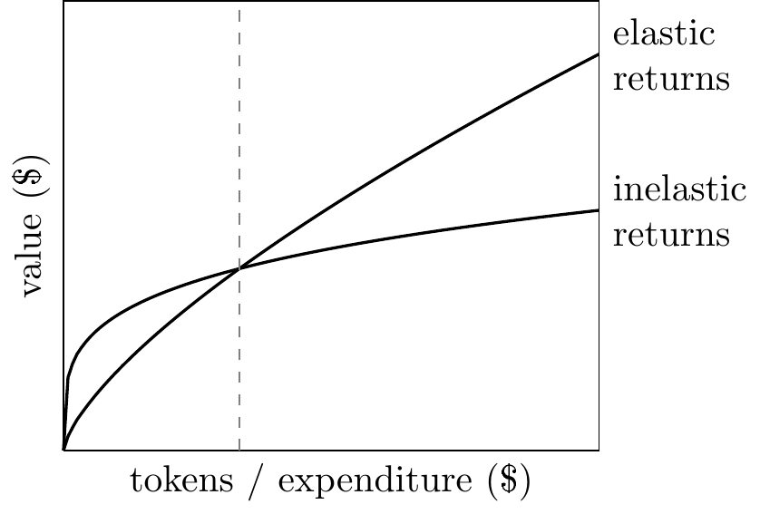
THIS IS A DRAFT
Please don’t circulate. Comments very welcome!
- What are the returns to tokens?
-
We can draw a graph with token expenditure on the x-axis, and economic value on the y-axis:
I find it pretty interesting to think about the shape of this curve, and how to expect it will change in the future. The two extreme perspectives:
- Returns are elastic. This means doubling tokens roughly doubles the value. It also means firms.
- Returns are inelastic.
returns are elastic returns are inelastic doubling tokens used increases value a lot doubling tokens used increases value a little labs capture a large share of the value labs capture a small share of the value customers get a little more value than they spend customers get much more value than they spend
Observations on the Returns to Tokens
- The aggregate elasticity is the value-weighted average of individual elasticities.
- Formally \(\alpha = \sum_i \omega_i \alpha_i\), with weights \(\omega_i = V_i/V\). The result holds both when everyone scales spending proportionally (immediate from the chain rule on \(V = \sum_i V_i(E_i)\)) and when users optimize against a common token price \(p\) (since then \(V_i'(E_i) = p\) for all \(i\), so each marginal dollar produces the same value regardless of who spends it). The takeaway: aggregate inelasticity is not an artefact of aggregation — if individuals face inelastic returns, the aggregate does too, unless marginal spending becomes concentrated on a few unusually elastic users.
OLD FROM HERE ON DOWN
- TL;DR.
-
The return to expenditure on AI appears to be relatively inelastic. This means you get a lot of value from the first few dollars but then the marginal value falls quickly.
This implies value from AI will significantly exceed expenditure on AI. If the returns to AI expenditure remain inelastic (and I give reasons to expect this), then people and firms will get much more value from AI than what they spend on it.
Returns to expenditure on AGI might be inelastic. As AI gets better, it’s unclear what shape the expenditure curve will have. There are reasons to expect both high and low curvature.
Summary
- Expenditure on AI has diminishing returns.
-
We often see that the returns to expenditure on AI agents are inelastic meaning you get a lot of value from the first few dollars, but then the marginal value falls quickly:
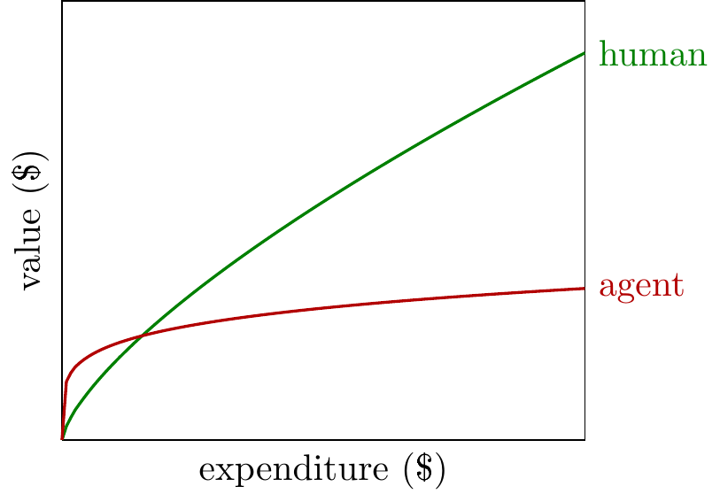
When we compare the returns on agentic labor vs human labor we often see a “tortoise-hare” relationship: the agent wins at low levels of expenditure, but the human wins with higher levels. I discuss some evidence, and reasons why we should expect this, below.
- This implies the value from AI will be significantly higher than the expenditure on AI.
-
In the plot below I mark the optimal expenditure on agents and on humans: where the marginal value of each is equalized to their marginal cost. You can see that the expenditure on agents is much lower, but the ratio between value and expenditure is much greater for agents than humans.
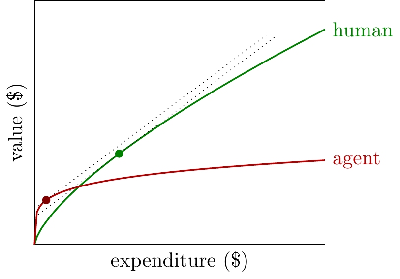
- This has some important implications.
-
If we think the returns to expenditure on AI will remain inelastic then:
- We would see a big impact of AI on productivity without much expenditure on AI.
- The companies that sell scarce inputs to AI (compute, algorithms) would only capture a small share of the value that is being generated.
- Labs could find AI is very valuable for R&D, while their expenditure on AI R&D could remain relatively modest.
Argument
- The returns on agent expenditure appear to be relatively inelastic.
-
There are a few lines of evidence that the returns to AI expenditure are more inelastic (i.e. steeply diminishing) than the returns on human labor:
- AI can often beat humans at a given task at a small expenditure level, but falls behind humans at higher expenditure levels.
- There are many tasks which AI can do much cheaper than a human, and many which it cannot do at any reasonable price. There are relatively few tasks in the middle range. This implies the number of tasks performed, as a function of expenditure, is relatively inelastic for agents.
We can also give a simple theoretical argument why returns to LLM expenditure would be inelastic: if LLMs tend to cache the solutions to many problems, so the cost of solving many problems is low, while other problems are entirely out of their reach. Thus we would expect the returns to LLM expenditure to be less-elastic than the returns to human expenditure.
- What do inelastic returns to AI look like in everyday life?
-
Suppose doubling your usage of AI would not make a great deal of difference to the value you’re getting, then your returns to expenditure are inelastic, i.e. quickly diminishing.
Some more concrete examples of inelastic returns:
- If having two agents do a programming task is useful, but much less than twice as useful.
- If you get a lot of value from spending $10 on AI to optimize your function, or improve your paper, but spending $20 doesn’t get you much more value.
- If demand for AI was relatively inelastic: if the price of tokens was free, they wouldn’t use much more than what they use already.
These are all questions about the expenditure on AI holding fixed the quality of AI. These are all consistent with progression in model quality causing a significant increase in value and a significant increase in expenditure.
- Why should the value of AI diminish more quickly than humans?
-
We can sketch a very rough theory. Suppose humans and LLM-based agents solve problems in a different way:
- Humans think about a problem; harder questions require more thought.
- Agents immediately solve a problem if they have seen the solution before, otherwise they cannot solve it at any cost (i.e. they are glorified lookup tables).
This is a grossly simplified model but it gives a simple prediction: the returns to agent expenditure will diminish exceedingly quickly (elasticity \(\approx\) 0).
- If returns are inelastic then the ratio of value to expenditure will be high.
-
Intuitively, suppose the first few dollars on AI are very valuable but the value of additional expenditure diminishes quickly. Then you’ll just spend a few dollars and get a very high value.
Formally, suppose we have an function \(F(K)\), where \(K\) is expenditure on agents (measured in dollars). If \(K\) is chosen optimally, so that the marginal value is equal to the marginal cost (\(F'(K^*)=1\)) then we have:
\[\utt{\frac{K^*}{F(K^*)}}{ratio of expenditure}{to value} = \utt{\frac{dF(K^*)}{dK^*}\frac{K^*}{F(K^*)}}{elasticity of $F(\cdot)$}{at $K^*$} = \frac{\text{marginal value at $K^*$}}{\text{average value at $K^*$}}\]
We can illustrate this as follows:

If the value-curve, \(F(K)\), is everywhere inelastic, then the demand curve (\(F'^{-1}(K)\)) will also be relatively inelastic.
- This has a few important implications.
-
Suppose the returns to AI remain inelastic, then we would expect the following:
The value people get from AI will be significantly higher than their expenditure. We might see people spending $100 a month on agents, but getting far more than $100 of value from agents.
Recursive self-improvement would happen without a significant increase in the capital share. A common conjecture has been that we could monitor for signs of recursive self-improvement by AI labs through their relative expenditure on AI labor vs human labor, i.e. their capital share. The argument in this note gives some reason to doubt this: if returns to AI are inelastic then we might see a substantial contribution of agentic labor to R&D without a substantial expenditure on agentic labor.
AI would transform the economy but remain a small share of output. Many analyses of AI have assumed that, if AI has dramatic implications on growth, then holders of scarce inputs (algorithms, compute, energy) will be paid a large share of the output. In fact if the returns to AI and compute are relatively inelastic, then they could have a large impact, but only receive a small share of output. (Note this is entirely independent of the demand for intrinsically human vs AI labor).
- My expectation.
- The graphs below show stylized returns to expenditure on human and agent labor, with the common “tortoise-hare” pattern: the return to agent labor expenditure is higher at first, but diminishes more quickly. The black dots show the optimal expenditure on each, where the marginal cost and marginal value are equalized.
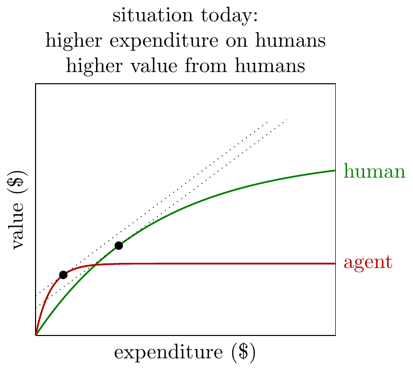

Evidence on Returns to Expenditure
- We don’t have great evidence.
-
Unfortunately we only have fairly sparse direct evidence of AI on output. The following would be the ideal set of experiments.
- Returns to expenditure on autonomous tasks.
- Cardinal scale: e.g. optimizing an algorithm, making money. Here we can directly measure elasticity.
- Ordinal scale: e.g. score on a test, score on a video game. Here we can compare human vs agent elasticity at the crossover point (if it exists).
- Sets of tasks: e.g. benchmarks. Here we can score by the number of tasks solved at a given budget level, and compare human vs agent elasticity at the crossover point (if it exists).
- Returns to expenditure on individual uplift. We would like to give workers varying AI budgets, and see how it affects their productivity. I don’t know of any experiments which do this.
- Returns to expenditure on firm-level uplift. We would like to give firms varying AI budgets and see how it affects their success. Again I’m not aware of any experiments that do this.
We would also want try to map out the demand for AI, i.e. varying the price and observing the quantity demanded. I believe we currently have little evidence on the elasticity of demand for AI.
Finally, if we could have our dream experiment we would vary both expenditure on AI and expenditure on humans to measure the whole production function, \(F(K,L)\).
- Returns to expenditure on autonomous tasks.
- Agent progress on RE-bench tasks is less-elastic than humans.
-
RE-bench (METR (2024)) scaling curves find that agents beat humans at low levels of expenditure, but humans beat agents at higher levels:
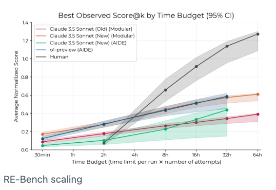
This means the agent curve cuts the human curve from above, and so the agent curve is less-elastic than the human curve (at the point of intersection).
- Agent task-completion is less-elastic than human task-completion.
-
We can compile a set of tasks, and calculate the share of those tasks completed at a given cost. Using the share of tasks completed as the y-axis, we can then plot the returns to expenditure, both for agents and humans:
METR (2024) compare the cost of humans and LLMs to do a variety of tasks and say:
“when agents can do a task, they can often do so at a fraction of the cost of humans.”
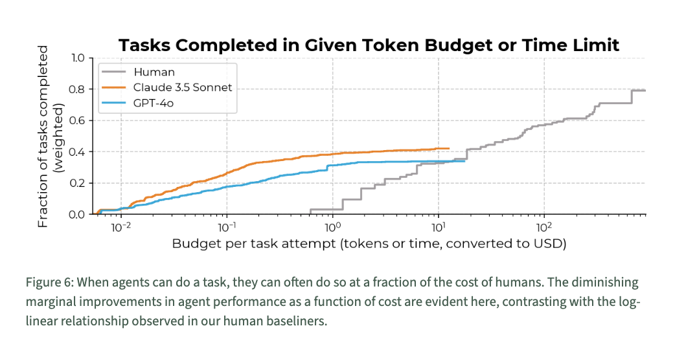
From METR (2024) Similarly METR (2025) find that agent curves cut the human curve from above:
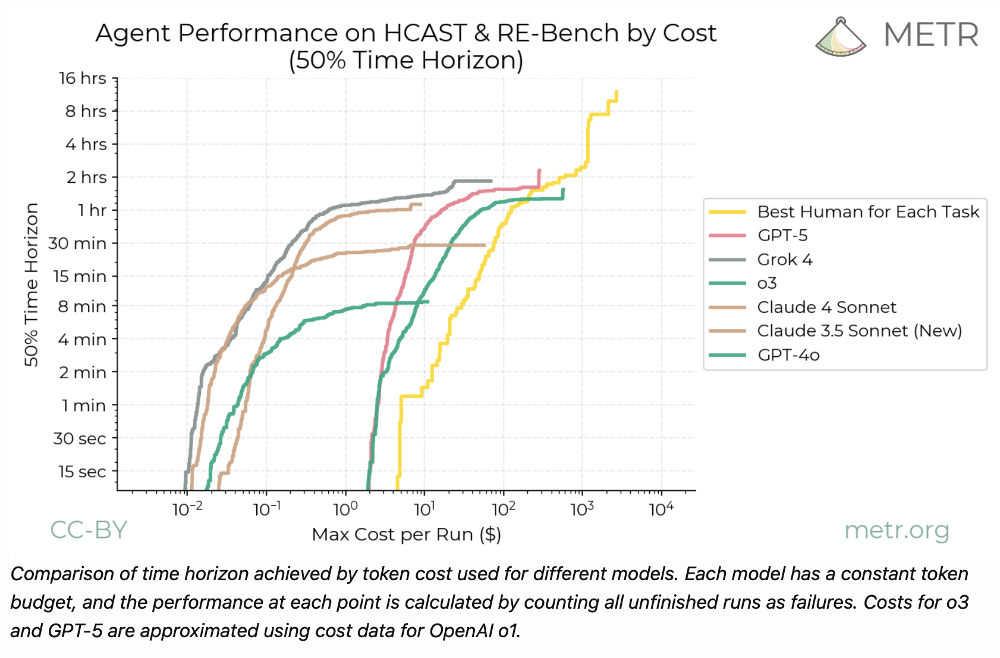
Agent Performance on HCAST & RE-Bench by Cost - It’s unclear whether agent-expenditure is getting more elastic over time.
-
Gundlach et al. (2026) find the price of high capabilities is falling relatively faster than the price of low capabilities:
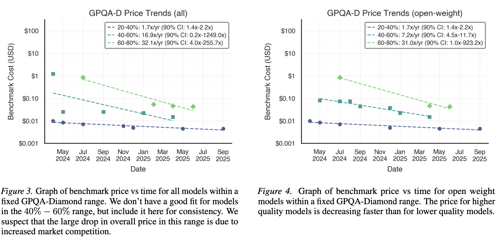
This would imply that elasticity of returns to expenditure is increasing, i.e. the expenditure curve is rotating counter-clockwise.
Cottier et al. (2025) (Epoch) simimlarly find that the price of higher capabilities has been falling faster than the price of lower capabilities. However note that they report price/token, whereas we care more about the price per output, and the tokens/output can vary substantially across models.
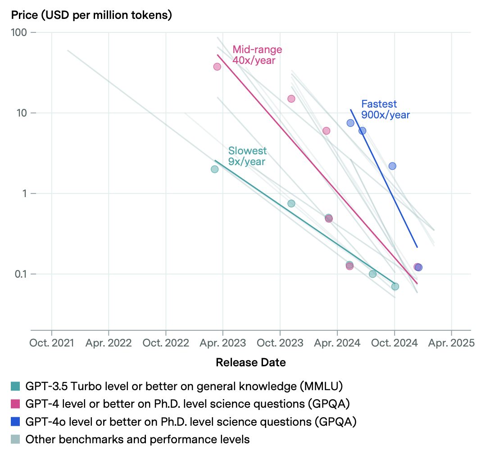
One important qualification: I believe the cost estimates are based on using the same model, and the same budget, on all tasks. In fact a cost-minimizing firm would vary the model and budget depending on the ex-ante difficulty of the tasks. This would make later curves relatively less elastic (it would lower the cost of the easy tasks), so push somewhat against this increasing-elasticity result.
- Some papers estimate the elasticity of inference-time scaling.
-
Brown et al. (2024) find that pass-rate on math and code benchmarks scales roughly log-linearly with the number of samples or with sequential test-time compute, with elasticities well below 1 (on SWE-bench lite, CodeContests, MATH).
Snell et al. (2024) estimate the returns to test-time compute, but say it hits hard limits below human levels: “across the board these schemes provided small gains on hard problems”. As discussed above, existence of a ceiling implies agent-expenditure is inelastic relative to human-expenditure.
- Inference-time scaling fails on harder optimization benchmarks.
-
Several recent benchmarks find inference-time scaling stops paying off well below the level of human experts:
- Shetty et al. (2025) (GSO): “leading SWE-Agents struggle significantly, achieving less than 5% success rate, with limited improvements even with inference-time scaling.”
- Press et al. (2025) (AlgoTune): the largest speedups come from substituting faster libraries, not from algorithmic insight.
- Nathani et al. (2025) (MLGymBench), Ma et al. (2025) (SWE-fficiency): similar patterns of “surface-level speedups” without algorithmic discoveries.
Equivalently: for these tasks the agent contribution function \(\tilde F(K)\) has very low elasticity at the frontier, even though it has high level at low \(K\).
- ARC-AGI seems to show inelastic returns to agents.
-
Data from ARC-AGI is a great illustration, we can observe a few relevant things:
- The organizers say the human scores are achievable at around $5/task, but we don’t have any other datapoints, so we can’t estimate an elasticity for human expenditure.
- Nevertheless, if an agent cannot match a human score at human expenditure, we can generally be confident that it will exceed human score at low expenditure, and therefore the agent expenditure curve will cut the human expenditure curve from above, thus the agent expenditure curve is less-elastici.
- We can observe how returns to expenditure have changed over time. ==[We want to know if the price of high scores has declined faster than the price of low scores]==
- There is little evidence on elasticity of demand for AI.
-
It would be useful to know the aggregate elasticity of demand for AI, however there is relatively little evidence.
Demirer et al. (2025) analyze OpenRouter data and find relatively low price sensitivity for customers switching between providers for access to the same model. This provides some weak evidence for inelastic demand: if demand was very elastic then there would be strong incentive to choose the lowest-price provider.
- Other observation:
- Svanberg et al. (2024) argue that many tasks could be done by computers, but are too expensive: “only 23% of worker compensation “exposed” to AI computer vision would be cost-effective for firms to automate because of the large upfront costs of AI systems.” However this is almost entirely due to fixed costs (data collection, fine tuning, scaffolding), not marginal costs.
Models [WORK IN PROGRESS]
- Summary.
-
Suppose the firm is maximizing \(Y(K,L)\), where \(L\) is the quantity of human labor and \(K\) the quantity of agent labor, with input prices \(w\) and \(r\). We want the value of agents (the degree to which they increase output) relative to expenditure on agents:
\[\frac{\text{agent value}}{\text{agent expenditure}} = \frac{Y(K^*,\bar L)-Y(0,\bar L)}{rK^*}.\]
To pin down the firm’s optimum we need some nonlinearity. The cleanest choice is to fix human labor at \(\bar L\) (treating \(w\bar L\) as sunk in the short run), which leaves a one-dimensional problem \(\max_K Y(K,\bar L) - rK\) with FOC \(Y_K(K^*,\bar L) = r\). Define the agent contribution function
\[\tilde F(K) \equiv Y(K,\bar L) - Y(0,\bar L).\]
Then \(\tilde F'(K) = Y_K(K,\bar L)\), the FOC is just \(\tilde F'(K^*) = r\), and the value-expenditure ratio collapses to
\[\frac{V_A}{rK^*} = \frac{\tilde F(K^*)}{\tilde F'(K^*)\,K^*} = \frac{1}{\varepsilon_{\tilde F}(K^*)}.\]
Universal punchline: the agent value-expenditure ratio is the inverse elasticity of the agent contribution function at the optimum. If returns to agents are very inelastic (\(\varepsilon_{\tilde F}\ll 1\)), agents create much more value than they cost. Each subsection below just instantiates \(\tilde F\).
(For the continuum-of-tasks model, where labor isn’t a single quantity, the analogous minimal nonlinearity is to fix output \(\bar Y\) instead — see that section.)
- Perfect substitutes.
-
\(Y = F(K) + G(\bar L)\), with \(F\) concave. The agent contribution doesn’t even depend on labor:
\[\tilde F(K) = Y(K,\bar L) - Y(0,\bar L) = F(K),\]
so directly from the universal result,
\[\frac{V_A}{rK^*} = \frac{1}{\varepsilon_F(K^*)}.\]
The value-to-expenditure ratio is the inverse elasticity of returns to agent expenditure. (Here fixing \(\bar L\) isn’t even necessary — the FOCs decouple, so the ratio is the same under joint optimization over \(L\).)
- Imperfect substitutes (CES).
-
Suppose we have \(Y=(K^\sigma+L^\sigma)^{1/\sigma}\), with elasticity of substitution \(\eta = 1/(1-\sigma)\). Cost-minimization gives the standard CES results:
- Optimal input ratio: \(K/L = (w/r)^\eta\).
- Agent expenditure share: \(s_K = \frac{rK}{rK+wL} = \frac{r^{1-\eta}}{r^{1-\eta}+w^{1-\eta}}\).
- Value share equals expenditure share: under constant returns to scale, total revenue exhausts factor payments (\(Y=rK+wL\)), so \(s_K\) is also the share of output value attributable to agents.
The comparative static on \(s_K\) with respect to agent prices is \(\frac{\partial \ln s_K}{\partial \ln r} = (1-\eta)(1-s_K)\), so as agents get cheaper (or, equivalently, more productive at fixed quality):
- Substitutes (\(\eta>1\), i.e. \(\sigma\in(0,1)\)): agent expenditure share rises.
- Cobb-Douglas (\(\eta=1\), the limit \(\sigma\to 0\)): expenditure shares are constant in prices.
- Complements (\(\eta<1\), i.e. \(\sigma<0\)): agent expenditure share falls.
So the puzzle in this note — agents producing high value but commanding little expenditure — corresponds naturally to the complements case in CES. As a numerical example: with \(\eta=0.3\), \(w=1\) and \(r=0.001\) (agents 1000x cheaper than humans), the agent expenditure share is \(0.001^{0.7}/(0.001^{0.7}+1) \approx 0.8\%\).
This is essentially the Hicks/Acemoglu logic for input shares: factor-augmenting technical progress only raises that factor’s revenue share when the factor is a gross substitute for the others.
Value-expenditure ratio (under fixed \(\bar L\)). The FOC at fixed \(\bar L\) is \(Y_K = Y^{1-\sigma}K^{\sigma-1} = r\), giving \(K^* = Y_1\,r^{-\eta}\) and \(rK^* = Y_1\, r^{1-\eta}\).
Complements (\(\sigma\le 0\), \(\eta\le 1\)): \(Y(0,\bar L) = 0\), so \(\tilde F(K) = Y(K,\bar L)\) and the value-expenditure ratio is
\[\frac{V_A}{rK^*} = \frac{Y_1}{Y_1\,r^{1-\eta}} = r^{\eta-1} = \frac{1}{r^{1-\eta}}.\]
Closed form depending only on \(r\) and \(\eta\) (and not on \(\bar L\) or \(w\), since \(w\bar L\) is sunk). Explodes as \(r\to 0\), exactly the post’s puzzle.
Substitutes (\(\sigma>0\), \(\eta>1\)): \(Y(0,\bar L) = \bar L\), so \(\tilde F(K) = (K^\sigma+\bar L^\sigma)^{1/\sigma} - \bar L\). An interior \(K^*\) requires \(r\) above some threshold; for cheaper \(r\) the firm wants only agents (corner solution).
- Apple-picking with CES.
-
Suppose labor contributes to two tasks but capital only contributes to one. This is a version of the apple-picking model (Cunningham and Shetty 2026), where agents can only pick low-hanging fruit:
\[Y(K,L)=L^\gamma+(K^\sigma+L^\sigma)^{\gamma/\sigma}.\]
Here \(L^\gamma\) is the high-apple output (humans only) and \((K^\sigma+L^\sigma)^{\gamma/\sigma}\) is the low-apple output (both, with substitutability \(\sigma\) and diminishing returns \(\gamma\)). Labor enters both terms non-rivalrously: \(L\) is human productive capacity contributing to high and low picking simultaneously, rather than a single bucket allocated between them.
Restrict to \(\sigma>0\) (humans can pick low apples on their own) and \(\gamma\in(0,1)\) (apples exhaust). Apply the universal recipe with labor fixed at \(\bar L\):
\[\tilde F(K) = (K^\sigma+\bar L^\sigma)^{\gamma/\sigma} - \bar L^\gamma\]
— the agent contribution is purely the boost to low-apple output. The FOC \(\tilde F'(K^*) = r\) multiplied by \(K^*\) gives
\[rK^* = \gamma\,s_K\,Y_L(K^*),\]
where \(Y_L(K) \equiv (K^\sigma+\bar L^\sigma)^{\gamma/\sigma}\) is low-apple output and \(s_K \equiv K^{*\sigma}/(K^{*\sigma}+\bar L^\sigma)\) is the agent’s CES share within low-apple. Using \(\bar L^\gamma/Y_L = (1-s_K)^{\gamma/\sigma}\):
\[\frac{V_A}{rK^*} = \frac{1 - (1-s_K)^{\gamma/\sigma}}{\gamma\,s_K}.\]
The ratio interpolates between two inverse elasticities depending on the agent share within low-apple:
- \(s_K\to 1\) (agents dominate low-apple): ratio \(\to 1/\gamma\) (inverse of diminishing-returns parameter).
- \(s_K\to 0\) (agents marginal in low-apple): ratio \(\to 1/\sigma\) (inverse of within-low-apple substitutability).
- \(\gamma=\sigma\): model degenerates to additive (\(Y = K^\gamma + 2\bar L^\gamma\)), ratio = \(1/\gamma\) exactly.
The post’s headline pattern — agents producing huge value with small expenditure — arises naturally when \(\gamma\) is small (low apples exhaust quickly) and \(s_K\) is close to 1 (agents do most of the low-apple picking), giving ratio \(\approx 1/\gamma \gg 1\).
- Continuum of tasks.
-
Continuum of tasks \(i\in[0,1]\), all necessary, agents and humans perfect substitutes within each task. Output is Leontief across tasks:
\[Y = \min_{i\in[0,1]} y(i).\]
Here labor isn’t a single variable (humans are spread across tasks at different per-task costs), so the analogous minimal nonlinearity is to fix output at \(\bar Y\) instead of fixed \(\bar L\). The “value of agents” then becomes the cost saving per unit output relative to the humans-only counterfactual.
Assume cost per unit of task \(i\) is isoelastic in the task index, with agents steeper than humans (visualized below):
\[c_H(i) = h \cdot i^{\alpha_H}, \qquad c_A(i) = a \cdot i^{\alpha_A}, \qquad \alpha_A > \alpha_H \ge 0.\]
Each task is assigned to whoever is cheaper, with threshold \(i^* = (h/a)^{1/(\alpha_A-\alpha_H)}\). Agents do \([0,i^*]\), humans do \([i^*,1]\). Let \(\bar c \equiv h(i^*)^{\alpha_H} = a(i^*)^{\alpha_A}\). Per unit \(\bar Y\):
- Share of tasks done by agents: \(i^*\).
- Per-unit expenditures: \(E_A = \int_0^{i^*} a\,i^{\alpha_A}\,di = \frac{\bar c\,i^*}{\alpha_A+1}\), \(E_H = \int_{i^*}^1 h\,i^{\alpha_H}\,di = \frac{h-\bar c\,i^*}{\alpha_H+1}\).
- Agent expenditure share: \(s_A = \frac{(i^*)^{\alpha_H+1}(\alpha_H+1)}{(i^*)^{\alpha_H+1}(\alpha_H+1) + (1-(i^*)^{\alpha_H+1})(\alpha_A+1)}\). We have \(s_A < i^*\) whenever \(\alpha_A>\alpha_H\): agents do a non-trivial share of tasks but command a smaller share of expenditure, because they handle the cheap tasks.
Value-expenditure ratio (under fixed \(\bar Y\)). Cost per unit \(\bar Y\) without agents is \(c_0 = h/(\alpha_H+1)\), with agents it is \(c_1 = E_A + E_H\). The cost saving per unit output is the natural “value of agents” here, and dividing by per-unit agent expenditure gives a strikingly clean formula:
\[\frac{V_A}{rK^*} = \frac{c_0 - c_1}{E_A} = \frac{\alpha_A - \alpha_H}{\alpha_H+1},\]
independent of \(h\), \(a\), and \(i^*\). The ratio is pinned down entirely by the elasticity gap: agents create more value per dollar exactly when their cost-curve is steeper than humans’.
Numerical example: with \(\alpha_H = 1\), \(\alpha_A = 3\), \(h=1\), \(a=4\) we get \(i^* = 1/2\), \(E_A = 1/16\), \(E_H = 3/8\), \(c_0 = 1/2\), \(c_1 = 7/16\). Agents do 50% of tasks but only \(1/7 \approx 14\%\) of expenditure; cost saving is \(V_A = 1/16\) per unit \(\bar Y\), and the value-expenditure ratio is exactly 1.
(This is essentially the Zeira (1998) / Acemoglu and Autor (2011) / Acemoglu and Restrepo (2018) task-based model, specialized to isoelastic comparative-advantage schedules.)

Joint distribution of \((c_A, c_H)\) across tasks for the calibration in the numerical example (\(\alpha_H = 1\), \(\alpha_A = 3\), \(h=1\), \(a=4\)). Costs are perfectly rank-correlated and isoelastic in rank: \(c_H(i)=i\) and \(c_A(i)=4i^3\). The marginal density of each cost is shown alongside the corresponding axis (lighter shading): the human marginal is uniform on \([0,1]\) (since \(\alpha_H=1\)), while the agent marginal is concentrated near zero with a long right tail (since \(\alpha_A=3>\alpha_H\)). The dotted indifference line \(c_H = (r/w)\,c_A\) (drawn here for \(r=w\)) partitions tasks: above it, agents are cheaper in dollar terms (\(r\,c_A<w\,c_H\)); below it, humans are. The joint curve crosses the line at the threshold task \(i^*=1/2\). (The curve is plotted up to \(c_A=2\); it continues to \((4,1)\) off the panel.)
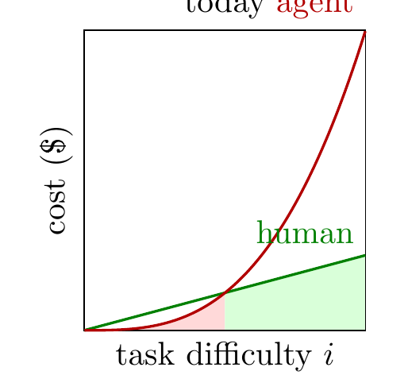

- Uplift.
-
Suppose capital is purely labor-augmenting,
\[Y(K,L) = F(G(K)L),\]
where \(G\) is the agent “uplift” or productivity multiplier (normalize \(G(0)=1\) so \(Y(0,\bar L) = F(\bar L)\)) and \(F\) is concave. With labor fixed at \(\bar L\):
\[\tilde F(K) = F(G(K)\bar L) - F(\bar L).\]
For \(F(x) = x^\beta\), \(\beta < 1\): \(\tilde F(K) = \bar L^\beta\,[G(K)^\beta - 1]\), and the FOC \(\tilde F'(K^*) = r\) gives \(rK^* = \beta\,Y_1\,\varepsilon_G(K^*)\) where \(\varepsilon_G(K) \equiv KG'(K)/G(K)\) is the elasticity of the uplift function. Then
\[\frac{V_A}{rK^*} = \frac{1 - G(K^*)^{-\beta}}{\beta\,\varepsilon_G(K^*)}.\]
The denominator features the marginal uplift \(\varepsilon_G\) (the elasticity), the numerator features the level \(G(K^*)\). The post’s headline pattern — agents commanding small expenditure but creating huge value — arises naturally when \(G\) has a high level but low elasticity at the optimum (uplift saturates fast).
(If we instead jointly optimize over \(L\), the exponent \(\beta\) becomes \(\theta = \beta/(1-\beta)\), because labor reallocates upward in response to agent-augmented productivity. The fixed-\(\bar L\) version is the short-run picture.)
Notes
- Cardinal vs ordinal measures of capability.
-
Even with ordinal measures of capability, we can say something about the relative elasticity of returns.
- Cardinal output. Suppose we can directly measure output on a cardinal scale. This is true when using agents for optimization, where we can measure quantitatively the value of the optimizations returns. With cardinal output we can fully characterize the function \(Y(K,L)\), and observe the elasticity at each point.
- Ordinal output. In many cases we can only the ordinal outcome, and we don’t directly observe the value of that output. We can’t observe the elasticity of returns but we can rank the elasticities at the point of intersction. If the returns to agent labor cross the returns to human labor from above (which seems generally true), then the elasticity of returns to expenditure must be lower for agent labor than human labor at that point.
- Sets of tasks. In some cases we only observe the set of tasks that can be achieved for a certain cost. If the ranking of the sets are the same, between humans and agents, then we can treat the sets as an ordinal variable.
- Characterizing returns with elasticity.
-
There are a few related claims about the relative returns to expenditure on agent vs human labor:
- Agents have lower elasticity than humans.
- Agents have a capability ceiling below human ceiling (if any).
- For each task either (1) agents can do it cheaper than humans, or (2) agents cannot do it at any expenditure level.
I believe statement #1 is the most useful, both theoretically and empirically. The other two claims involve asymptotic behavior of agents, i.e. whether they could do a task at enormously high levels of expenditure. But the elasticity claim is easier to test and seems sufficient for most practical cases.
- Agents will have lower elasticity if they act ask lookup tables.
-
Here’s a stylized model of human and agent labor:
- Humans think about a problem; harder questions require more thought.
- Agents immediately solve a problem if they have seen the solution before, otherwise they cannot solve it at any cost (i.e. they are lookup tables).
This is a grossly simplified model but it gives a simple prediction, where the agent expenditure curve will be a step function (elasticity$$0).
Offcuts
- Expenditure curves shifting up.
-
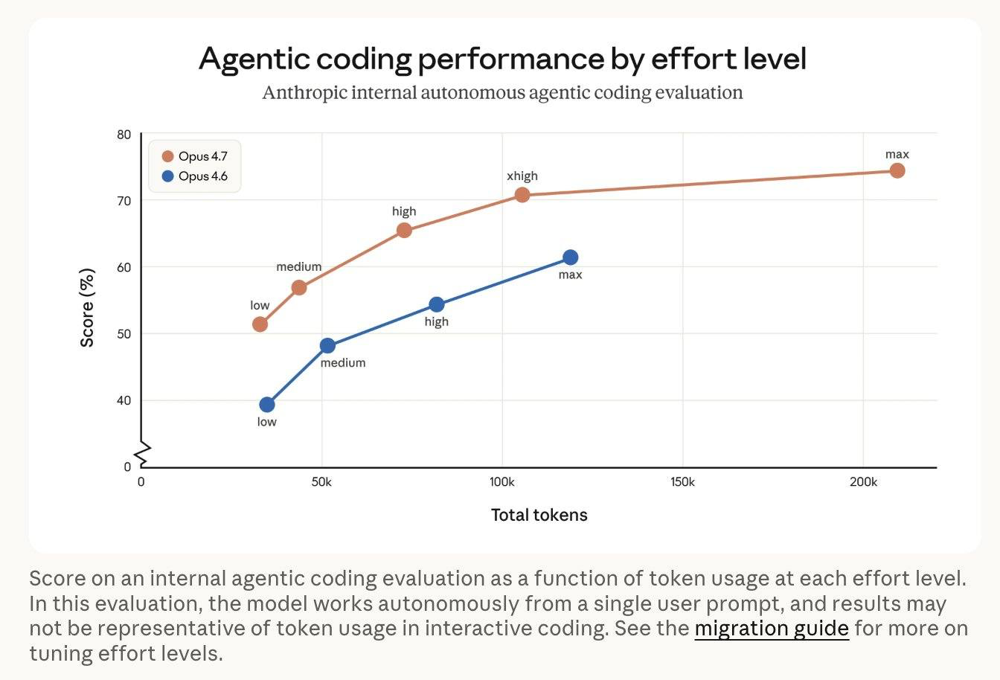
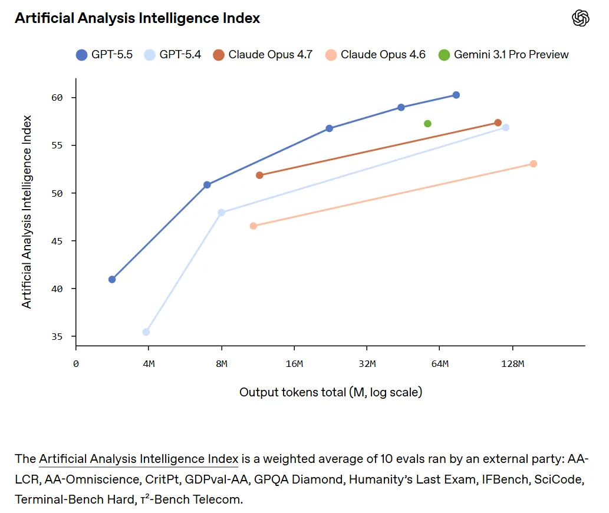
You get additively more output for the same input: implies you’ll spend the same & get more value.
(Hard to reconcile with increased expenditure)
References
Acemoglu, Daron, and David Autor. 2011. “Skills, Tasks and Technologies: Implications for Employment and Earnings.” In, edited by David Card and Orley Ashenfelter, 4:1043–1171. Handbook of Labor Economics. Elsevier. https://doi.org/https://doi.org/10.1016/S0169-7218(11)02410-5.
Acemoglu, Daron, and Pascual Restrepo. 2018. “The Race Between Man and Machine: Implications of Technology for Growth, Factor Shares, and Employment.” American Economic Review 108 (6): 1488–1542. https://doi.org/10.3386/w22252.
Brown, Bradley, Jordan Juravsky, Ryan Ehrlich, Ronald Clark, Quoc V. Le, Christopher Ré, and Azalia Mirhoseini. 2024. “Large Language Monkeys: Scaling Inference Compute with Repeated Sampling.” https://arxiv.org/pdf/2407.21787.pdf.
Cottier, Ben, Ben Snodin, David Owen, and Tom Adamczewski. 2025. “LLM Inference Prices Have Fallen Rapidly but Unequally Across Tasks.” https://epoch.ai/data-insights/llm-inference-price-trends.
Cunningham, Tom, and Manish Shetty. 2026. “An Apple-Picking Model of AI R&D.” March 13, 2026. https://tecunningham.github.io/posts/2026-03-13-apple-picking-ai.html.
Demirer, Mert, Andrey Fradkin, Nadav Tadelis, and Sida Peng. 2025. “The Emerging Market for Intelligence: Pricing, Supply, and Demand for LLMs.” National Bureau of Economic Research.
Gundlach, Hans, Jayson Lynch, Matthias Mertens, and Neil Thompson. 2026. “The Price of Progress: Price Performance and the Future of AI.” https://arxiv.org/abs/2511.23455.
Ma, Jeffrey Jian, Milad Hashemi, Amir Yazdanbakhsh, et al. 2025. “SWE-fficiency: Can Language Models Optimize Real-World Repositories on Real Workloads?” https://arxiv.org/pdf/2511.06090.pdf.
METR. 2024. “An Update on Our General Capability Evaluations.” https://metr.org/blog/2024-08-06-update-on-evaluations/.
———. 2025. “Details about METR’s Evaluation of OpenAI GPT-5.” https://evaluations.metr.org/gpt-5-report/.
Nathani, Deepak, Lovish Madaan, Nicholas Roberts, et al. 2025. “MLGym: A New Framework and Benchmark for Advancing AI Research Agents.” https://arxiv.org/pdf/2502.14499.pdf.
Ord, Toby. 2025. “Are the Costs of AI Agents Also Rising Exponentially?” December 22, 2025. https://www.tobyord.com/writing/hourly-costs-for-ai-agents.
Press, Ori, Brandon Amos, Haoyu Zhao, et al. 2025. “AlgoTune: Can Language Models Speed up General-Purpose Numerical Programs?” https://arxiv.org/pdf/2507.15887.pdf.
Shetty, Manish, Naman Jain, Jinjian Liu, Vijay Kethanaboyina, Koushik Sen, and Ion Stoica. 2025. “GSO: Challenging Software Optimization Tasks for Evaluating SWE-Agents.” https://arxiv.org/pdf/2505.23671.pdf.
Snell, Charlie, Jaehoon Lee, Kelvin Xu, and Aviral Kumar. 2024. “Scaling LLM Test-Time Compute Optimally Can Be More Effective Than Scaling Model Parameters.” https://arxiv.org/pdf/2408.03314.pdf.
Svanberg, Maja, Wensu Li, Martin Fleming, Brian Goehring, and Neil Thompson. 2024. “Beyond AI Exposure: Which Tasks Are Cost-Effective to Automate with Computer Vision?” Available at SSRN 4700751. https://doi.org/10.2139/ssrn.5233833.
Zeira, Joseph. 1998. “Workers, Machines, and Economic Growth.” The Quarterly Journal of Economics 113 (4): 1091–1117. https://doi.org/10.1162/003355398555847.
Citation
BibTeX citation:
@online{cunningham,
author = {Cunningham, Tom},
title = {The {Returns} to {Tokens}},
url = {tecunningham.github.io/posts/2026-04-24-expenditure-on-agents.html},
langid = {en}
}
For attribution, please cite this work as:
Cunningham, Tom. n.d. “The Returns to Tokens.” tecunningham.github.io/posts/2026-04-24-expenditure-on-agents.html.